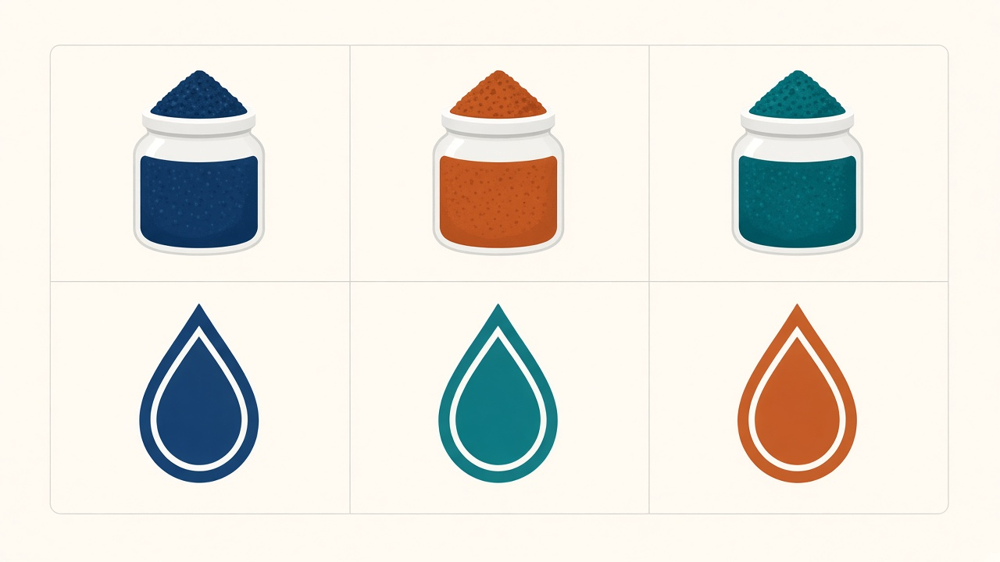
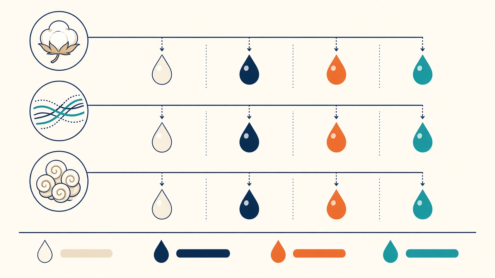
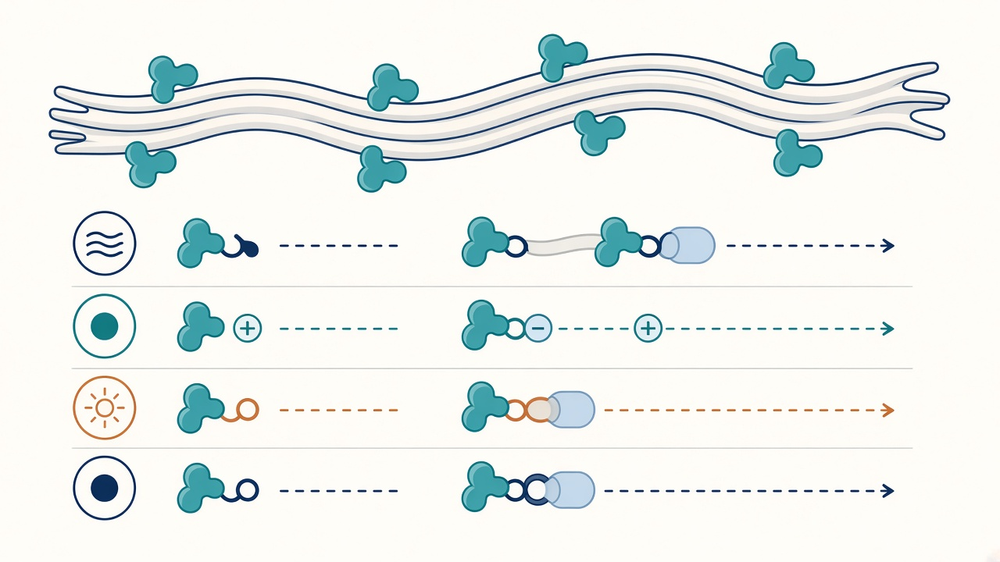

교육자료 · 염료
쉬운 말: 어떤 실에 어떤 물감을 쓰느냐. 면 티셔츠는 리액티브, 폴리는 디스퍼스, 카티온P(CDP)는 카티온. 온도 숫자는 공개 업계 창이지 공장 셋팅이 아니다. 색을 넣는 시점(선염·후염)은 염색 칸.


2010 교재는 직접·건염·황화·나프톨·염기성·산성·분산·매염을 길게 적었다. 지금 면 티셔츠 현장은 리액티브가 주력이다. 옛 슬라이드가 산성을 BASIC이라고 적은 것은 틀림 → 산성 = acid.

쉬운 말: 면·레이온에 화학으로 붙는 물감. 공유결합. 티셔츠 솔리드 워크호스. 알칼리에서 고착. 공개 창: VS(KN) 약 60°C, HE/MCT 약 80°C. 레시피 섞지 말 것.
쉬운 말: 물에 잘 안 녹아 아주 잘게 풀어 쓰는 물감. 레귤러 폴리에스터. 공개 창: HT 약 130°C 가압. 상압 캐리어는 별도. P/스판은 공개 주의 창이 더 낮다.
쉬운 말: +극 물감. 아크릴·카티온P(CDP). 선염표 헤더·헤더 톤. 면 솔리드 염료가 아니다. 레귤러 폴리 130°C 디스퍼스와 다른 칸. 공개 창: 흔히 약 95–110°C 근처(등급·설비마다 다름).
쉬운 말: 물에 안 녹아 먼저 환원→섬유에 먹은 뒤 공기 산화. 데님 경사·링다잉. 티셔츠 솔리드 주력이 아니다.
쉬운 말: 면 흑색 단가용으로 쓰이던 칸. 환원→산화. 방류·황화물 이슈로 사용이 줄는 추세. 공개 창 예: 약 90–95°C.
쉬운 말: 울·나일론·실크. BASIC이 아니다. 면 티셔츠 솔리드와 별개. 2010 슬라이드 오표기 교정.
온도·pH·욕비는 공개 업계 창. 염료 브랜드·설비·액비마다 다름. 공장 프로그램 셋팅이라고 쓰지 말 것. 셋팅은 작지·설비를 본다. → 염색 · 온도 표
| 지금 말 | English | 섬유 | 쉬운 메모 | 공개 창(예) |
|---|---|---|---|---|
| 리액티브 | Reactive | 면·레이온·티셔츠 | 공유결합. 배기·CPB. | VS≈60 / HE≈80°C |
| 디스퍼스 | Disperse | 레귤러 폴리 | 분산 후 섬유 확산. HT. | ≈130°C 가압 |
| 카티온 / 염기성 | Basic / cationic | 아크릴·CDP | 헤더·헤더톤. 면 솔리드 아님. | ≈95–110°C* |
| 산성 | Acid | 울·나일론·실크 | BASIC 아님. | ≈98–100°C 상압 |
| 배트 / 인디고 | Vat / indigo | 데님 경사 | 환원→산화. 링다잉. | (데님 공정) |
| 설퍼 | Sulfur | 흑색 면 | 단가·방류 이슈. | ≈90–95°C |
| 다이렉트 | Direct | 면(저가·레거시) | 면은 리액티브로 대체 추세. | ≈90–100°C |
| 나프톨 / 아조익 | Azoic / naphthol | 면(레거시) | 바탕+현색 커플링. 신규 거의 없음. | — |
| 매염 | Mordant | 역사 | 지금 거의 안 씀. 금속착염으로 이동. | — |
*CDP 등급(일반 CDP vs ECDP)·캐리어·설비에 따라 공개 창이 달라진다. 공장 셋팅 아님.
매염 없이 셀룰로오스에 직접. 견뢰도가 리액티브·배트보다 낮은 편. 면 양산은 리액티브로 많이 넘어감.
바탕 처리제 + 현색제가 섬유 위에서 결합. 선명·진한 색. 신규 오더는 거의 없음.
인디고졸류. 침지 후 산·산화로 배트 재생. 현장 거의 퇴장.
금속 이온과 착염. 조작 번거로워 거의 퇴장.
이 페이지 숫자로 공장 규격을 정하지 않는다. 작지·바이어 스펙을 본다.
이 페이지 온도·pH·욕비는 공개 업계 창이다. 공장 프로그램·현장 온도·합격 스펙이라고 쓰지 말 것. 작지·설비·바이어 계약을 본다.
산성 ≠ BASIC. 염기성/카티온 = 아크릴·CDP. 면 솔리드 리액티브와 섞어 말하지 말 것.
색을 언제 넣는지는 이 칸이 아니다. 선염(패키지)·후염(배기)·가먼트는 염색. 색이 빠지는지는 견뢰도.
공개 교육 링크(텍스트만 · iframe 없음).
외부 영상은 제3자 콘텐츠. 공장 레시피로 쓰지 말 것.
공유결합 리액티브. 배기 또는 CPB.
디스퍼스. 물에 잘게 분산 → 열로 섬유 속으로.
아크릴·CDP용. 헤더/헤더톤. 면 솔리드 아님.
2010 슬라이드 오표기. 산성=울/나일론. 염기성/카티온=아크릴·CDP.
물에 안 녹아 환원(가용) 후 산화로 고착. 데님에 흔함.
공개 창. 브랜드·설비·액비마다 다름. 작지·설비를 본다.
셀룰로오스 흑색. 사용 감소 추세·폐수 이슈.
이 칸=무슨 물감. 염색 칸=언제·어떻게 넣는지.